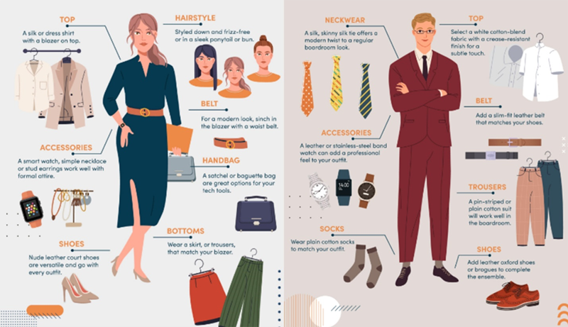
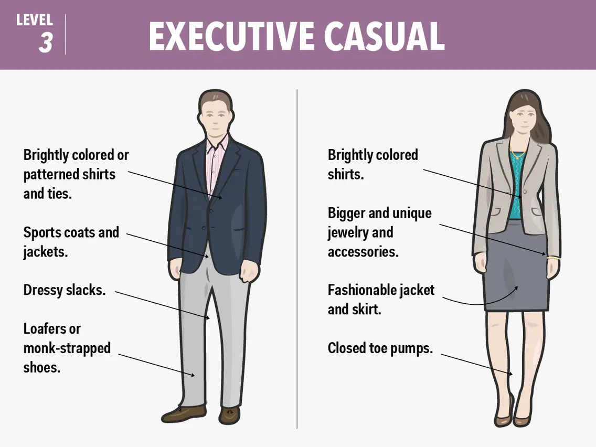
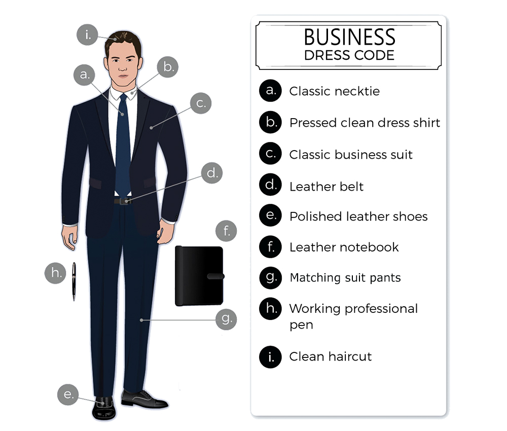
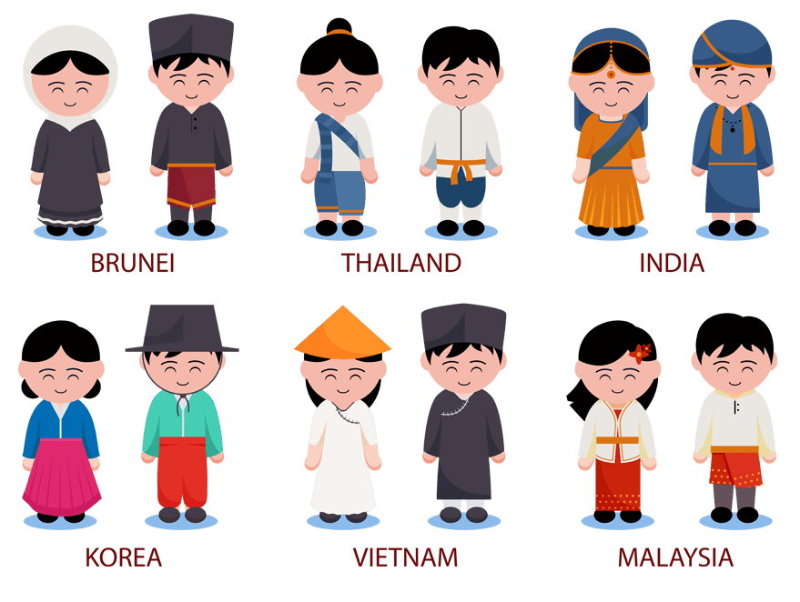

Wearing good attire serves several purposes:
- First Impressions:
- Your attire often forms the basis of first impressions. Whether in personal or professional settings, people tend to judge others based on their appearance. Good attire can help create a positive impression, indicating professionalism, attention to detail, and respect for the occasion or environment
- Confidence Boost:
- Dressing well can boost your confidence and self-esteem. When you feel good about how you look, you're likely to carry yourself with more assurance and poise, which can positively impact your interactions and performance.
- Respect:
- Dressing appropriately shows respect for yourself, the people you're interacting with, and the context of the situation. It demonstrates that you value the occasion enough to dress appropriately, whether it's a formal event, a business meeting, or simply showing respect for cultural norms.
- Professionalism:
- In many professional settings, wearing appropriate attire is essential for conveying professionalism and competence. It can signal to colleagues, clients, or employers that you take your role seriously and are capable of representing yourself and your organization professionally.
- Personal Branding:
- Your attire is part of your personal brand and can communicate aspects of your personality, interests, and values. Whether consciously or unconsciously, people make assumptions about you based on how you present yourself through clothing choices, so wearing good attire can help shape the image you want to convey.
Diffrent Types Of The Attire For The Diffrent Events
- Formal events:
- These include weddings, galas, balls, and ceremonies that require a dress code. For women, the typical attire is a long gown, a cocktail dress, or a suit with elegant accessories. For men, the usual attire is a tuxedo, a suit, or a formal shirt and trousers with a tie or a bow. 
- Casual events:
- These include parties, barbecues, picnics, and outings that do not have a strict dress code. For women, the common attire is a sundress, a skirt, jeans, shorts, or leggings with a blouse, a t-shirt, or a sweater. For men, the common attire is jeans, shorts, khakis, or chinos with a polo shirt, a t-shirt, or a casual shirt. 
- Business events:
- These include meetings, conferences, presentations, and interviews that require a professional look. For women, the typical attire is a suit, a blazer, a dress, or a skirt with a blouse, a shirt, or a sweater. For men, the typical attire is a suit, a blazer, a shirt, and trousers with a tie or a bow. 
- Cultural events:
- These include festivals, celebrations, ceremonies, and rituals that are related to a specific culture or tradition. For women and men, the attire may vary depending on the origin, religion, and customs of the culture. Some examples are kimonos, saris, lehengas, dirndls, kilts, and dashikis. 
There are many different types of attire for different occasions, depending on the formality, culture, weather, and personal preference of the wearer. Some examples are:
Tutorials
We have the video section for you where we have select the spefic videos from the various videos available on
the basis of the your demand and time we have seprated the videos.